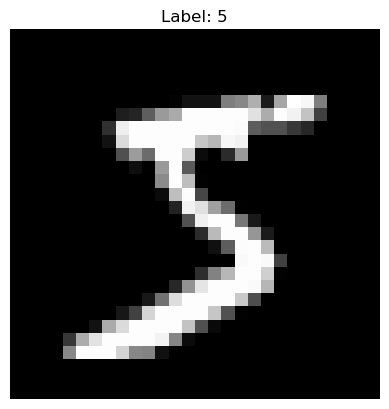
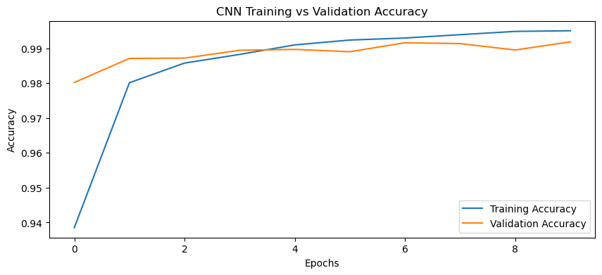

Contents
Demonstration#
Import Dependencies#
import numpy as np
import tensorflow as tf
from tensorflow.keras import datasets, layers, models
from tensorflow.keras.optimizers import Adam
from sklearn.model_selection import ParameterGrid
import matplotlib.pyplot as plt
Step 2 — Load and Preprocess the Dataset#
We’ll use the MNIST dataset (28×28 grayscale digits).
# Load data
(X_train, y_train), (X_test, y_test) = datasets.mnist.load_data()
# Normalize pixel values (0–255 → 0–1)
X_train = X_train.astype('float32') / 255.0
X_test = X_test.astype('float32') / 255.0
# Reshape to fit CNN input (samples, height, width, channels)
X_train = X_train.reshape(-1, 28, 28, 1)
X_test = X_test.reshape(-1, 28, 28, 1)
# One-hot encode labels
y_train = tf.keras.utils.to_categorical(y_train, 10)
y_test = tf.keras.utils.to_categorical(y_test, 10)
plt.imshow(X_train[0].reshape(28, 28), cmap='gray')
plt.title(f"Label: {y_train[0].argmax()}")
plt.axis('off')
plt.show()

Define the CNN Model#
This is a feedforward CNN for image classification.
def create_cnn_model(filters=32, kernel_size=3, dropout_rate=0.3, learning_rate=0.001):
model = models.Sequential([
layers.Conv2D(filters, (kernel_size, kernel_size), activation='relu', input_shape=(28, 28, 1)),
layers.MaxPooling2D((2, 2)),
layers.Conv2D(filters * 2, (kernel_size, kernel_size), activation='relu'),
layers.MaxPooling2D((2, 2)),
layers.Flatten(),
layers.Dropout(dropout_rate),
layers.Dense(128, activation='relu'),
layers.Dense(10, activation='softmax')
])
model.compile(
optimizer=Adam(learning_rate=learning_rate),
loss='categorical_crossentropy',
metrics=['accuracy']
)
return model
Train the Base Model#
Train with standard hyperparameters first.
model = create_cnn_model()
history = model.fit(
X_train, y_train,
validation_split=0.2,
epochs=10,
batch_size=64,
verbose=1
)
C:\Users\sangouda\AppData\Roaming\Python\Python312\site-packages\keras\src\layers\convolutional\base_conv.py:113: UserWarning: Do not pass an `input_shape`/`input_dim` argument to a layer. When using Sequential models, prefer using an `Input(shape)` object as the first layer in the model instead.
super().__init__(activity_regularizer=activity_regularizer, **kwargs)
Epoch 1/10
750/750 ━━━━━━━━━━━━━━━━━━━━ 16s 18ms/step - accuracy: 0.8602 - loss: 0.4524 - val_accuracy: 0.9802 - val_loss: 0.0685
Epoch 2/10
750/750 ━━━━━━━━━━━━━━━━━━━━ 14s 19ms/step - accuracy: 0.9780 - loss: 0.0696 - val_accuracy: 0.9871 - val_loss: 0.0464
Epoch 3/10
750/750 ━━━━━━━━━━━━━━━━━━━━ 20s 18ms/step - accuracy: 0.9856 - loss: 0.0453 - val_accuracy: 0.9872 - val_loss: 0.0426
Epoch 4/10
750/750 ━━━━━━━━━━━━━━━━━━━━ 14s 19ms/step - accuracy: 0.9882 - loss: 0.0362 - val_accuracy: 0.9894 - val_loss: 0.0359
Epoch 5/10
750/750 ━━━━━━━━━━━━━━━━━━━━ 14s 18ms/step - accuracy: 0.9909 - loss: 0.0278 - val_accuracy: 0.9897 - val_loss: 0.0390
Epoch 6/10
750/750 ━━━━━━━━━━━━━━━━━━━━ 16s 21ms/step - accuracy: 0.9922 - loss: 0.0252 - val_accuracy: 0.9890 - val_loss: 0.0375
Epoch 7/10
750/750 ━━━━━━━━━━━━━━━━━━━━ 14s 18ms/step - accuracy: 0.9922 - loss: 0.0227 - val_accuracy: 0.9916 - val_loss: 0.0319
Epoch 8/10
750/750 ━━━━━━━━━━━━━━━━━━━━ 13s 17ms/step - accuracy: 0.9941 - loss: 0.0181 - val_accuracy: 0.9913 - val_loss: 0.0345
Epoch 9/10
750/750 ━━━━━━━━━━━━━━━━━━━━ 13s 17ms/step - accuracy: 0.9955 - loss: 0.0142 - val_accuracy: 0.9895 - val_loss: 0.0393
Epoch 10/10
750/750 ━━━━━━━━━━━━━━━━━━━━ 12s 17ms/step - accuracy: 0.9959 - loss: 0.0124 - val_accuracy: 0.9918 - val_loss: 0.0331
Evaluate on Test Data#
test_loss, test_acc = model.evaluate(X_test, y_test, verbose=0)
print(f"Test Accuracy: {test_acc:.4f}")
Hyperparameter Tuning (Manual Search)#
You can manually tune filters, dropout, and learning rate to improve results.
from sklearn.model_selection import ParameterGrid
import random
# Use a smaller subset for quick tuning
sample_idx = random.sample(range(len(X_train)), 10000) # 10k samples instead of 60k
X_train_small = X_train[sample_idx]
y_train_small = y_train[sample_idx]
from tensorflow.keras.callbacks import EarlyStopping
early_stop = EarlyStopping(monitor='val_loss', patience=2, restore_best_weights=True)
# Define a smaller parameter grid
param_grid = {
'filters': [32, 64], # fewer values
'kernel_size': [3], # fixed kernel size
'dropout_rate': [0.3], # fixed dropout
'learning_rate': [0.001, 0.0005]
}
best_acc = 0
best_params = {}
# Run fewer epochs and use validation split
for params in ParameterGrid(param_grid):
print(f"Testing {params}")
model = create_cnn_model(**params)
model.fit(
X_train_small, y_train_small,
validation_split=0.1,
epochs=3, # reduced from 5
batch_size=128, # larger batch size
verbose=0,
callbacks=[early_stop]
)
_, acc = model.evaluate(X_test[:2000], y_test[:2000], verbose=0) # evaluate on subset
print(f"Accuracy: {acc:.4f}")
if acc > best_acc:
best_acc = acc
best_params = params
print("✅ Best Hyperparameters:", best_params)
print(f"✅ Best Accuracy: {best_acc:.4f}")
Testing {'dropout_rate': 0.3, 'filters': 32, 'kernel_size': 3, 'learning_rate': 0.001}
C:\Users\sangouda\AppData\Roaming\Python\Python312\site-packages\keras\src\layers\convolutional\base_conv.py:113: UserWarning: Do not pass an `input_shape`/`input_dim` argument to a layer. When using Sequential models, prefer using an `Input(shape)` object as the first layer in the model instead.
super().__init__(activity_regularizer=activity_regularizer, **kwargs)
Accuracy: 0.9645
Testing {'dropout_rate': 0.3, 'filters': 32, 'kernel_size': 3, 'learning_rate': 0.0005}
Accuracy: 0.9510
Testing {'dropout_rate': 0.3, 'filters': 64, 'kernel_size': 3, 'learning_rate': 0.001}
Accuracy: 0.9655
Testing {'dropout_rate': 0.3, 'filters': 64, 'kernel_size': 3, 'learning_rate': 0.0005}
Accuracy: 0.9565
✅ Best Hyperparameters: {'dropout_rate': 0.3, 'filters': 64, 'kernel_size': 3, 'learning_rate': 0.001}
✅ Best Accuracy: 0.9655
Training Visualization#
Compare training and validation performance.
plt.figure(figsize=(10, 4))
plt.plot(history.history['accuracy'], label='Training Accuracy')
plt.plot(history.history['val_accuracy'], label='Validation Accuracy')
plt.xlabel('Epochs')
plt.ylabel('Accuracy')
plt.legend()
plt.title('CNN Training vs Validation Accuracy')
plt.show()

CNN Workflow Summary#
Step |
Process |
Purpose |
|---|---|---|
1 |
Load and preprocess data |
Normalize and reshape |
2 |
Build CNN |
Define conv, pooling, dense layers |
3 |
Compile |
Specify optimizer and loss |
4 |
Train |
Fit model on data |
5 |
Evaluate |
Test accuracy |
6 |
Tune |
Optimize hyperparameters |
7 |
Visualize |
Track accuracy/loss trends |
Key CNN Components#
Layer |
Function |
|---|---|
Conv2D |
Extracts spatial features (edges, textures) |
MaxPooling2D |
Reduces spatial dimensions |
Dropout |
Prevents overfitting by disabling random neurons |
Flatten |
Converts 2D matrix → 1D vector |
Dense |
Fully connected output layer |
Softmax |
Converts logits into probability distribution |
Common CNN Hyperparameters to Tune#
Hyperparameter |
Effect |
Typical Range |
|---|---|---|
Filters |
Feature extraction depth |
16–128 |
Kernel Size |
Receptive field |
3×3 or 5×5 |
Dropout Rate |
Regularization |
0.2–0.5 |
Learning Rate |
Weight update step size |
1e-4 to 1e-2 |
Batch Size |
Samples per gradient step |
32–128 |
Epochs |
Number of training passes |
10–50 |
Insights#
Dropout combats overfitting by regularizing dense layers.
Adam optimizer provides adaptive learning rate.
Batch normalization (optional) can stabilize training.
Early stopping halts when validation loss stops improving.
Final Takeaway
CNNs learn spatial hierarchies of features using convolution + pooling layers. Training involves minimizing cross-entropy loss, and hyperparameter tuning refines model depth, learning rate, and regularization strength for best generalization.